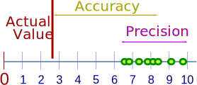
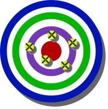

Accuracy and Precision
They mean slightly different things!
Accuracy
Accuracy is how close a measured value is to the actual (true) value.
Precision
Precision is how close the measured values are to each other.
Examples
Here is an example of several values on the number line:

And an example on a Target:
|  |  |
|
| High Accuracy Low Precision |
Low Accuracy High Precision |
High Accuracy High Precision |
Example: Hitting the Post

If you are playing football and you always hit the right goal post instead of scoring, then you are not accurate, but you are precise!
How to Remember?
- aCcurate is Correct (a bullseye).
- pRecise is Repeating (hitting the same spot, but maybe not the correct spot)
Bias (don't let precision fool you!)
When we measure something several times and all values are close, they may all be wrong if there is a "Bias"
Bias is a systematic (built-in) error which makes all measurements wrong by a certain amount.
Examples of Bias
- The scales read "1 kg" when there is nothing on them
- You always measure your height wearing shoes with thick soles.
- A stopwatch that takes half a second to stop when clicked
In each case all measurements are wrong by the same amount. That is bias.
Degree of Accuracy
Degree of Accuracy depends on the instrument we are measuring with. But as a general rule:
The Degree of Accuracy is half a unit each side of the unit of measure.
Examples:
| When an instrument measures in "1"s any value between 6½ and 7½ is measured as "7" |
 |
| When an instrument measures in "2"s any value between 7 and 9 is measured as "8" |
 |
(Notice that the arrow points to the same spot, but the measured values are different!
Read more at Errors in Measurement.
)
We should show final values that match the accuracy of our least accurate value used.

Example: We are told the dog is about 2 feet high.
We can convert that to 609.6 mm, but that suggests we know the height to within 0.1 mm!
So we should use 600 mm